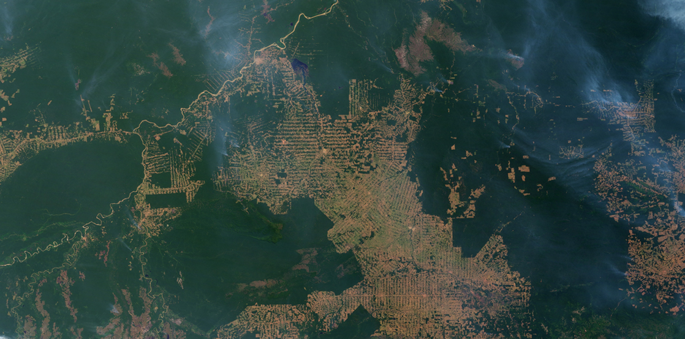
Biologists estimate that species extinctions are currently 500–1000 times the rate seen previously in Earth's history when there were no unusual geological or climatic events occurring. Biologists call the previous rate the "background" rate of extinction. The current high rates will cause a precipitous decline in the biodiversity (the diversity of species) of the planet in the next century or two. The losses will include many species we know today. Although it is sometimes difficult to predict which species will become extinct, many are listed as endangered (at great risk of extinction). However, the majority of extinctions will be of species that science has not yet even described.
Most of these "invisible" species that will become extinct currently live in tropical rainforests like those of the Amazon basin. These rainforests are the most diverse ecosystems on the planet and are being destroyed rapidly by deforestation, which biologists believe is driving many rare species with limited distributions extinct. Between 1970 and 2011, almost 20 percent of the Amazon rainforest was lost. Rates are higher in other tropical rainforests. What we are likely to notice on a day-to-day basis as a result of biodiversity loss is that food will be more difficult to produce, clean water will be more difficult to find, and the rate of development of new medicines will become slower, as we depend upon other species for much of these services. This increased loss of biodiversity is almost entirely a result of human activities as we destroy species' habitats, introduce disruptive species into ecosystems, hunt some species to extinction, continue to warm the planet with greenhouse gases, and influence nature in other ways. Slowing the loss of biodiversity is within our abilities if we make dramatic changes in our consumptive behavior and identify and protect the elements of our ecosystems that we depend on for our lives and welfare.
- 21.1 Importance of Biodiversity
- Describe biodiversity as the equilibrium of naturally fluctuating rates of extinction and speciation
- Identify benefits of biodiversity to humans
- 21.2 Threats to Biodiversity
- Identify significant threats to biodiversity
- Explain the effects of habitat loss, exotic species, and hunting on biodiversity
- Identify the early and predicted effects of climate change on biodiversity
- 21.3 Preserving Biodiversity
- Describe biodiversity as the equilibrium of naturally fluctuating rates of extinction and speciation
- Explain the legislative framework for conservation
- Identify the factors important in conservation preserve design
- Identify examples of the effects of habitat restoration
| # | Lesson | Key Concepts | Source |
|---|---|---|---|
| 1 | Importance of Biodiversity — Part 1 | Types of biodiversity (genetic, species, ecosystem), chemical diversity, medications from organisms, current species diversity estimates, measuring biodiversity challenges | CB 21.1 (first half) |
| 2 | Importance of Biodiversity — Part 2 | Patterns of biodiversity, endemism, human health, agricultural diversity, ecosystem services, seed banks, Svalbard vault, pollination, wild food sources | CB 21.1 (second half) |
| 3 | Threats to Biodiversity | Habitat loss, overharvesting, exotic/invasive species, climate change, amphibian decline, bush meat trade, ballast water introductions | CB 21.2 |
| 4 | Preserving Biodiversity | Extinction rates, legislative framework, conservation preserve design, habitat restoration, biodiversity hotspots, climate change mitigation | CB 21.3 |
| 5 | Practice Test | All topics — comprehensive assessment | All |
| Standard | Description | Lessons |
|---|---|---|
| BIO.9a | Investigating and understanding dynamic equilibria within populations, communities, and ecosystems | 1, 2, 3, 4 |
| BIO.9b | Understanding interactions within and among populations including carrying capacities, limiting factors, and growth curves | 1, 2 |
| BIO.9c | Understanding the role of natural selection in populations and communities | 1, 3 |
| BIO.9d | Understanding nutrient cycling with energy flow through ecosystems | 2, 3 |
| BIO.9e | Understanding the effects of natural events and human activities on ecosystems | 2, 3, 4 |
- Describe biodiversity as the equilibrium of naturally fluctuating rates of extinction and speciation
- Identify benefits of biodiversity to humans
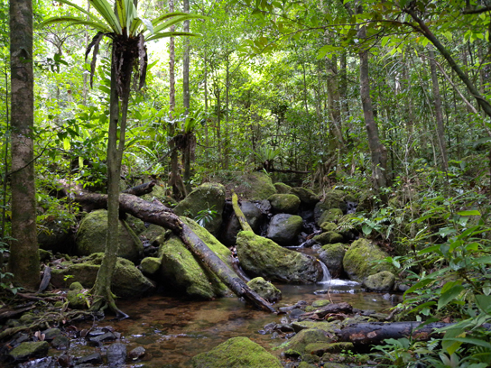
Biodiversity is a broad term for biological variety, and it can be measured at a number of organizational levels. Traditionally, ecologists have measured biodiversity by taking into account both the number of species and the number of individuals in each of those species. However, biologists are using measures of biodiversity at several levels of biological organization (including genes, populations, and ecosystems) to help focus efforts to preserve the biologically and technologically important elements of biodiversity.
When biodiversity loss through extinction is thought of as the loss of the passenger pigeon, the dodo, or, even, the woolly mammoth there seems to be no reason to care about it because these events happened long ago. How is the loss practically important for the welfare of the human species? Would these species have made our lives any better? From the perspective of evolution and ecology, the loss of a particular individual species, with some exceptions, may seem unimportant, but the current accelerated extinction rate means the loss of tens of thousands of species within our lifetimes. Much of this loss is occurring in tropical rainforests like the one pictured in Figure 21.2, which are especially high-diversity ecosystems that are being cleared for timber and agriculture. This is likely to have dramatic effects on human welfare through the collapse of ecosystems and in added costs to maintain food production, clean air and water, and improve human health.
Biologists recognize that human populations are embedded in ecosystems and are dependent on them, just as is every other species on the planet. Agriculture began after early hunter-gatherer societies first settled in one place and heavily modified their immediate environment: the ecosystem in which they existed. This cultural transition has made it difficult for humans to recognize their dependence on living things other than crops and domesticated animals on the planet. Today our technology smoothes out the extremes of existence and allows many of us to live longer, more comfortable lives, but ultimately the human species cannot exist without its surrounding ecosystems. Our ecosystems provide our food. This includes living plants that grow in soil ecosystems and the animals that eat these plants (or other animals) as well as photosynthetic organisms in the oceans and the other organisms that eat them. Our ecosystems have provided and will provide many of the medications that maintain our health, which are commonly made from compounds found in living organisms. Ecosystems provide our clean water, which is held in lake and river ecosystems or passes through terrestrial ecosystems on its way into groundwater.
A common meaning of biodiversity is simply the number of species in a location or on Earth; for example, the American Ornithologists' Union lists 2078 species of birds in North and Central America. This is one measure of the bird biodiversity on the continent. More sophisticated measures of diversity take into account the relative abundances of species. For example, a forest with 10 equally common species of trees is more diverse than a forest that has 10 species of trees wherein just one of those species makes up 95 percent of the trees rather than them being equally distributed. Biologists have also identified alternate measures of biodiversity, some of which are important in planning how to preserve biodiversity.
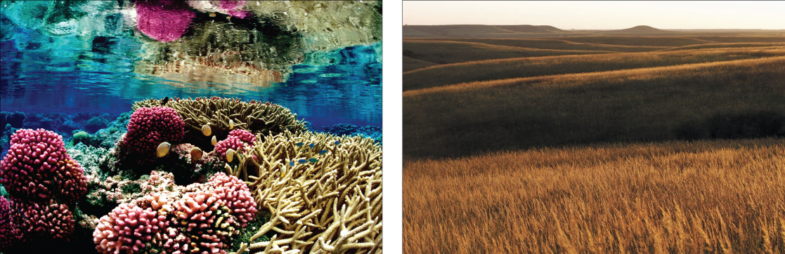
Genetic diversity is one alternate concept of biodiversity. Genetic diversity (or variation) is the raw material for adaptation in a species. A species' future potential for adaptation depends on the genetic diversity held in the genomes of the individuals in populations that make up the species. The same is true for higher taxonomic categories. A genus with very different types of species will have more genetic diversity than a genus with species that look alike and have similar ecologies. The genus with the greatest potential for subsequent evolution is the most genetically diverse one.
Most genes code for proteins, which in turn carry out the metabolic processes that keep organisms alive and reproducing. Genetic diversity can also be conceived of as chemical diversity in that species with different genetic makeups produce different assortments of chemicals in their cells (proteins as well as the products and byproducts of metabolism). This chemical diversity is important for humans because of the potential uses for these chemicals, such as medications. For example, the drug eptifibatide is derived from rattlesnake venom and is used to prevent heart attacks in individuals with certain heart conditions.
At present, it is far cheaper to discover compounds made by an organism than to imagine them and then synthesize them in a laboratory. Chemical diversity is one way to measure diversity that is important to human health and welfare. Through selective breeding, humans have domesticated animals, plants, and fungi, but even this diversity is suffering losses because of market forces and increasing globalism in human agriculture and migration. For example, international seed companies produce only a very few varieties of a given crop and provide incentives around the world for farmers to buy these few varieties while abandoning their traditional varieties, which are far more diverse. The human population depends on crop diversity directly as a stable food source and its decline is troubling to biologists and agricultural scientists.
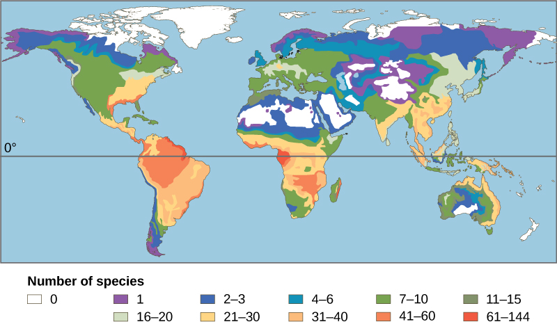
It is also useful to define ecosystem diversity: the number of different ecosystems on Earth or in a geographical area. Whole ecosystems can disappear even if some of the species might survive by adapting to other ecosystems. The loss of an ecosystem means the loss of the interactions between species, the loss of unique features of coadaptation, and the loss of biological productivity that an ecosystem is able to create. An example of a largely extinct ecosystem in North America is the prairie ecosystem (Figure 21.3). Prairies once spanned central North America from the boreal forest in northern Canada down into Mexico. They are now all but gone, replaced by crop fields, pasture lands, and suburban sprawl. Many of the species survive, but the hugely productive ecosystem that was responsible for creating our most productive agricultural soils is now gone. As a consequence, their soils are now being depleted unless they are maintained artificially at greater expense. The decline in soil productivity occurs because the interactions in the original ecosystem have been lost; this was a far more important loss than the relatively few species that were driven extinct when the prairie ecosystem was destroyed.
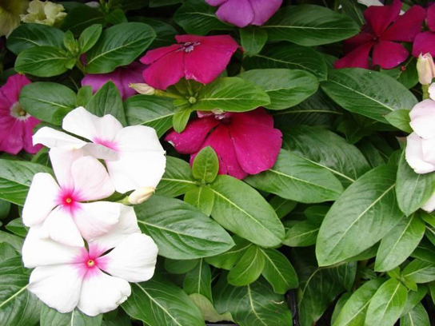
Despite considerable effort, knowledge of the species that inhabit the planet is limited. A recent estimate suggests that the eukaryote species for which science has names, about 1.5 million species, account for less than 20 percent of the total number of eukaryote species present on the planet (8.7 million species, by one estimate). Estimates of numbers of prokaryotic species are largely guesses, but biologists agree that science has only just begun to catalog their diversity. Even with what is known, there is no centralized repository of names or samples of the described species; therefore, there is no way to be sure that the 1.5 million descriptions is an accurate number. It is a best guess based on the opinions of experts on different taxonomic groups. Given that Earth is losing species at an accelerating pace, science knows little about what is being lost.
There are various initiatives to catalog described species in accessible and more organized ways, and the internet is facilitating that effort. Nevertheless, at the current rate of species description, which according to the State of Observed Species reports is 17,000–20,000 new species a year, it would take close to 500 years to describe all of the species currently in existence. The task, however, is becoming increasingly impossible over time as extinction removes species from Earth faster than they can be described.
Naming and counting species may seem an unimportant pursuit given the other needs of humanity, but it is not simply an accounting. Describing species is a complex process by which biologists determine an organism's unique characteristics and whether or not that organism belongs to any other described species. It allows biologists to find and recognize the species after the initial discovery to follow up on questions about its biology. That subsequent research will produce the discoveries that make the species valuable to humans and to our ecosystems. Without a name and description, a species cannot be studied in depth and in a coordinated way by multiple scientists.
Describe the three types of biodiversity discussed in this lesson (genetic, species/ecosystem, and chemical). Explain why chemical diversity is important for human medicine, using the example of eptifibatide. Then discuss the challenges scientists face in measuring current species diversity on Earth, including why describing species is more than just an accounting exercise.
- Describe biodiversity as the equilibrium of naturally fluctuating rates of extinction and speciation
- Identify benefits of biodiversity to humans
Biodiversity is not evenly distributed on the planet. Lake Victoria contained almost 500 species of cichlids (only one family of fishes present in the lake) before the introduction of an exotic species in the 1980s and 1990s caused a mass extinction. All of these species were found only in Lake Victoria, which is to say they were endemic. Endemic species are found in only one location. For example, the blue jay is endemic to North America, while the Barton Springs salamander is endemic to the mouth of one spring in Austin, Texas. Endemics with highly restricted distributions, like the Barton Springs salamander, are particularly vulnerable to extinction. Higher taxonomic levels, such as genera and families, can also be endemic.
Lake Huron contains about 79 species of fish, all of which are found in many other lakes in North America. What accounts for the difference in diversity between Lake Victoria and Lake Huron? Lake Victoria is a tropical lake, while Lake Huron is a temperate lake. Lake Huron in its present form is only about 7,000 years old, while Lake Victoria in its present form is about 15,000 years old. These two factors, latitude and age, are two of several hypotheses biogeographers have suggested to explain biodiversity patterns on Earth.
One of the oldest observed patterns in ecology is that biodiversity in almost every taxonomic group of organism increases as latitude declines. In other words, biodiversity increases closer to the equator (Figure 21.4).
It is not yet clear why biodiversity increases closer to the equator, but hypotheses include the greater age of the ecosystems in the tropics versus temperate regions, which were largely devoid of life or drastically impoverished during the last ice age. The greater age provides more time for speciation. Another possible explanation is the greater energy the tropics receive from the sun versus the lesser energy input in temperate and polar regions. But scientists have not been able to explain how greater energy input could translate into more species. The complexity of tropical ecosystems may promote speciation by increasing the habitat heterogeneity, or number of ecological niches, in the tropics relative to higher latitudes. The greater heterogeneity provides more opportunities for coevolution, specialization, and perhaps greater selection pressures leading to population differentiation. However, this hypothesis suffers from some circularity—ecosystems with more species encourage speciation, but how did they get more species to begin with? The tropics have been perceived as being more stable than temperate regions, which have a pronounced climate and day-length seasonality. The tropics have their own forms of seasonality, such as rainfall, but they are generally assumed to be more stable environments and this stability might promote speciation.
Regardless of the mechanisms, it is certainly true that biodiversity is greatest in the tropics. The number of endemic species is higher in the tropics. The tropics also contain more biodiversity hotspots. At the same time, our knowledge of the species living in the tropics is lowest and because of recent, heavy human activity the potential for biodiversity loss is greatest.
Loss of biodiversity eventually threatens other species we do not impact directly because of their interconnectedness; as species disappear from an ecosystem other species are threatened by the changes in available resources. Biodiversity is important to the survival and welfare of human populations because it has impacts on our health and our ability to feed ourselves through agriculture and harvesting populations of wild animals.
Many medications are derived from natural chemicals made by a diverse group of organisms. For example, many plants produce secondary plant compounds, which are toxins used to protect the plant from insects and other animals that eat them. Some of these secondary plant compounds also work as human medicines. Contemporary societies that live close to the land often have a broad knowledge of the medicinal uses of plants growing in their area. For centuries in Europe, older knowledge about the medical uses of plants was compiled in herbals—books that identified the plants and their uses. Humans are not the only animals to use plants for medicinal reasons. The other great apes, orangutans, chimpanzees, bonobos, and gorillas have all been observed self-medicating with plants.
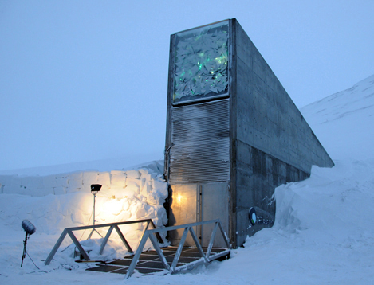
Modern pharmaceutical science also recognizes the importance of these plant compounds. Examples of significant medicines derived from plant compounds include aspirin, codeine, digoxin, atropine, and vincristine (Figure 21.5). Many medications were once derived from plant extracts but are now synthesized. It is estimated that, at one time, 25 percent of modern drugs contained at least one plant extract. That number has probably decreased to about 10 percent as natural plant ingredients are replaced by synthetic versions of the plant compounds. Antibiotics, which are responsible for extraordinary improvements in health and lifespans in developed countries, are compounds largely derived from fungi and bacteria.
In recent years, animal venoms and poisons have excited intense research for their medicinal potential. By 2007, the FDA had approved five drugs based on animal toxins to treat diseases such as hypertension, chronic pain, and diabetes. Another five drugs are undergoing clinical trials and at least six drugs are being used in other countries. Other toxins under investigation come from mammals, snakes, lizards, various amphibians, fish, snails, octopuses, and scorpions.
Aside from representing billions of dollars in profits, these medications improve people's lives. Pharmaceutical companies are actively looking for new natural compounds that can function as medicines. It is estimated that one third of pharmaceutical research and development is spent on natural compounds and that about 35 percent of new drugs brought to market between 1981 and 2002 were from natural compounds.
Finally, it has been argued that humans benefit psychologically from living in a biodiverse world. The chief proponent of this idea is entomologist E. O. Wilson. He argues that human evolutionary history has adapted us to living in a natural environment and that built environments generate stresses that affect human health and well-being. There is considerable research into the psychologically regenerative benefits of natural landscapes that suggest the hypothesis may hold some truth.
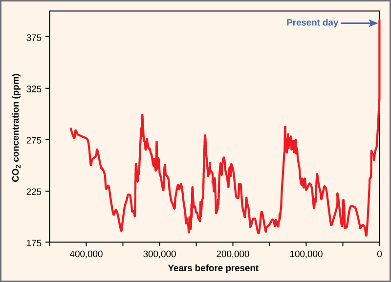
Since the beginning of human agriculture more than 10,000 years ago, human groups have been breeding and selecting crop varieties. This crop diversity matched the cultural diversity of highly subdivided populations of humans. For example, potatoes were domesticated beginning around 7,000 years ago in the central Andes of Peru and Bolivia. The people in this region traditionally lived in relatively isolated settlements separated by mountains. The potatoes grown in that region belong to seven species and the number of varieties likely is in the thousands. Each variety has been bred to thrive at particular elevations and soil and climate conditions. The diversity is driven by the diverse demands of the dramatic elevation changes, the limited movement of people, and the demands created by crop rotation for different varieties that will do well in different fields.
Potatoes are only one example of agricultural diversity. Every plant, animal, and fungus that has been cultivated by humans has been bred from original wild ancestor species into diverse varieties arising from the demands for food value, adaptation to growing conditions, and resistance to pests. The potato demonstrates a well-known example of the risks of low crop diversity: during the tragic Irish potato famine (1845–1852 AD), the single potato variety grown in Ireland became susceptible to a potato blight—wiping out the crop. The loss of the crop led to famine, death, and mass emigration. Resistance to disease is a chief benefit to maintaining crop biodiversity and lack of diversity in contemporary crop species carries similar risks. Seed companies, which are the source of most crop varieties in developed countries, must continually breed new varieties to keep up with evolving pest organisms. These same seed companies, however, have participated in the decline of the number of varieties available as they focus on selling fewer varieties in more areas of the world replacing traditional local varieties.
The ability to create new crop varieties relies on the diversity of varieties available and the availability of wild forms related to the crop plant. These wild forms are often the source of new gene variants that can be bred with existing varieties to create varieties with new attributes. Loss of wild species related to a crop will mean the loss of potential in crop improvement. Maintaining the genetic diversity of wild species related to domesticated species ensures our continued supply of food.
Since the 1920s, government agriculture departments have maintained seed banks of crop varieties as a way to maintain crop diversity. This system has flaws because over time seed varieties are lost through accidents and there is no way to replace them. In 2008, the Svalbard Global seed Vault, located on Spitsbergen island, Norway, (Figure 21.6) began storing seeds from around the world as a backup system to the regional seed banks. If a regional seed bank stores varieties in Svalbard, losses can be replaced from Svalbard should something happen to the regional seeds. The Svalbard seed vault is deep into the rock of the arctic island. Conditions within the vault are maintained at ideal temperature and humidity for seed survival, but the deep underground location of the vault in the arctic means that failure of the vault's systems will not compromise the climatic conditions inside the vault.
The Svalbard seed vault is located on Spitsbergen island in Norway, which has an arctic climate. Why might an arctic climate be good for seed storage?
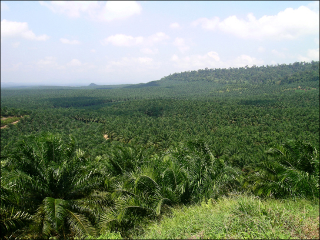
Although crops are largely under our control, our ability to grow them is dependent on the biodiversity of the ecosystems in which they are grown. That biodiversity creates the conditions under which crops are able to grow through what are known as ecosystem services—valuable conditions or processes that are carried out by an ecosystem. Crops are not grown, for the most part, in built environments. They are grown in soil. Although some agricultural soils are rendered sterile using controversial pesticide treatments, most contain a huge diversity of organisms that maintain nutrient cycles—breaking down organic matter into nutrient compounds that crops need for growth. These organisms also maintain soil texture that affects water and oxygen dynamics in the soil that are necessary for plant growth. Replacing the work of these organisms in forming arable soil is not practically possible. These kinds of processes are called ecosystem services. They occur within ecosystems, such as soil ecosystems, as a result of the diverse metabolic activities of the organisms living there, but they provide benefits to human food production, drinking water availability, and breathable air.
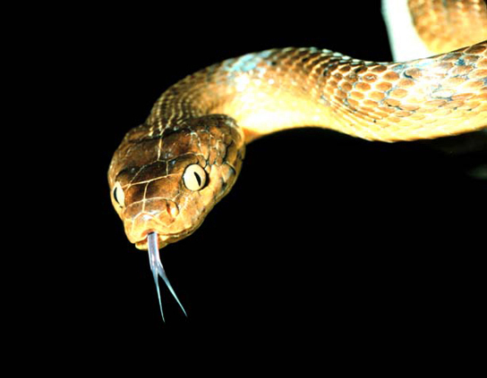
Other key ecosystem services related to food production are plant pollination and crop pest control. It is estimated that honeybee pollination within the United States brings in $1.6 billion per year; other pollinators contribute up to $6.7 billion. Over 150 crops in the United States require pollination to produce. Many honeybee populations are managed by beekeepers who rent out their hives' services to farmers. Honeybee populations in North America have been suffering large losses caused by a syndrome known as colony collapse disorder, a new phenomenon with an unclear cause. Other pollinators include a diverse array of other bee species and various insects and birds. Loss of these species would make growing crops requiring pollination impossible, increasing dependence on other crops.
Finally, humans compete for their food with crop pests, most of which are insects. Pesticides control these competitors, but these are costly and lose their effectiveness over time as pest populations adapt. They also lead to collateral damage by killing non-pest species as well as beneficial insects like honeybees, and risking the health of agricultural workers and consumers. Moreover, these pesticides may migrate from the fields where they are applied and do damage to other ecosystems like streams, lakes, and even the ocean. Ecologists believe that the bulk of the work in removing pests is actually done by predators and parasites of those pests, but the impact has not been well studied. A review found that in 74 percent of studies that looked for an effect of landscape complexity (forests and fallow fields near to crop fields) on natural enemies of pests, the greater the complexity, the greater the effect of pest-suppressing organisms. Another experimental study found that introducing multiple enemies of pea aphids (an important alfalfa pest) increased the yield of alfalfa significantly. This study shows that a diversity of pests is more effective at control than one single pest. Loss of diversity in pest enemies will inevitably make it more difficult and costly to grow food. The world's growing human population faces significant challenges in the increasing costs and other difficulties associated with producing food.
In addition to growing crops and raising food animals, humans obtain food resources from wild populations, primarily wild fish populations. For about one billion people, aquatic resources provide the main source of animal protein. But since 1990, production from global fisheries has declined. Despite considerable effort, few fisheries on Earth are managed sustainability.
Fishery extinctions rarely lead to complete extinction of the harvested species, but rather to a radical restructuring of the marine ecosystem in which a dominant species is so over-harvested that it becomes a minor player, ecologically. In addition to humans losing the food source, these alterations affect many other species in ways that are difficult or impossible to predict. The collapse of fisheries has dramatic and long-lasting effects on local human populations that work in the fishery. In addition, the loss of an inexpensive protein source to populations that cannot afford to replace it will increase the cost of living and limit societies in other ways. In general, the fish taken from fisheries have shifted to smaller species and the larger species are overfished. The ultimate outcome could clearly be the loss of aquatic systems as food sources.
Explain why biodiversity increases closer to the equator, including at least two hypotheses. Describe how agricultural crop diversity protects food security, using the Irish potato famine as an example. Then explain the role of ecosystem services in food production, including pollination and natural pest control.
- Identify significant threats to biodiversity
- Explain the effects of habitat loss, exotic species, and hunting on biodiversity
- Identify the early and predicted effects of climate change on biodiversity
The core threat to biodiversity on the planet, and therefore a threat to human welfare, is the combination of human population growth and the resources used by that population. The human population requires resources to survive and grow, and those resources are being removed unsustainably from the environment. The three greatest proximate threats to biodiversity are habitat loss, overharvesting, and introduction of exotic species. The first two of these are a direct result of human population growth and resource use. The third results from increased mobility and trade. A fourth major cause of extinction, anthropogenic (human-caused) climate change, has not yet had a large impact, but it is predicted to become significant during this century. Global climate change is also a consequence of human population needs for energy and the use of fossil fuels to meet those needs (Figure 21.7). Environmental issues, such as toxic pollution, have specific targeted effects on species, but are not generally seen as threats at the magnitude of the others.
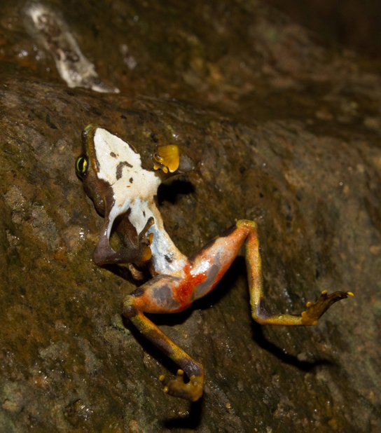
Humans rely on technology to modify their environment and replace certain functions that were once performed by the natural ecosystem. Other species cannot do this. Elimination of their habitat—whether it is a forest, coral reef, grassland, or flowing river—will kill the individuals in the species. Remove the entire habitat within the range of a species and, unless they are one of the few species that do well in human-built environments, the species will become extinct. Human destruction of habitats (habitats generally refer to the part of the ecosystem required by a particular species) accelerated in the latter half of the twentieth century. Consider the exceptional biodiversity of Sumatra: it is home to one species of orangutan, a species of critically endangered elephant, and the Sumatran tiger, but half of Sumatra's forest is now gone. The neighboring island of Borneo, home to the other species of orangutan, has lost a similar area of forest. Forest loss continues in protected areas of Borneo. The orangutan in Borneo is listed as endangered by the International Union for Conservation of Nature (IUCN), but it is simply the most visible of thousands of species that will not survive the disappearance of the forests of Borneo. The forests are removed for timber and to plant palm oil plantations (Figure 21.8). Palm oil is used in many products including food products, cosmetics, and biodiesel in Europe. A 5-year estimate of global forest cover loss for the years from 2000 to 2005 was 3.1 percent. Much loss (2.4 percent) occurred in the humid tropics where forest loss is primarily from timber extraction. These losses certainly also represent the extinction of species unique to those areas.
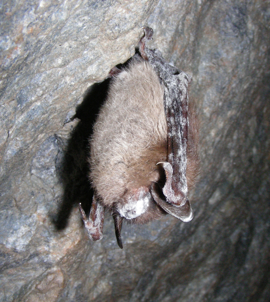
Habitat destruction can affect ecosystems other than forests. Rivers and streams are important ecosystems and are frequently the target of habitat modification through building and from damming or water removal. Damming of rivers affects flows and access to all parts of a river. Altering a flow regime can reduce or eliminate populations that are adapted to seasonal changes in flow. For example, an estimated 91 percent of river lengths in the United States have been modified with damming or bank modifications. Many fish species in the United States, especially rare species or species with restricted distributions, have seen declines caused by river damming and habitat loss. Research has confirmed that species of amphibians that must carry out parts of their life cycles in both aquatic and terrestrial habitats are at greater risk of population declines and extinction because of the increased likelihood that one of their habitats or access between them will be lost. This is of particular concern because amphibians have been declining in numbers and going extinct more rapidly than many other groups for a variety of possible reasons.
Habitat destruction, even when undertaken on behalf of humans, can lead to negative effects for us as well. Excessive soil erosion after forest removal, for example, can remove fertile soil and make river water toxic. Scientists and conservationists such as Wangari Maathai, who founded the Green Belt movement in Kenya, focus on replanting trees to repair habitats and prevent damage from deforestation. Maathai was awarded a Nobel Prize for her work, but unfortunately passed away in 2011.
Overharvesting is a serious threat to many species, but particularly to aquatic species. There are many examples of regulated fisheries (including hunting of marine mammals and harvesting of crustaceans and other species) monitored by fisheries scientists that have nevertheless collapsed. The western Atlantic cod fishery is the most spectacular recent collapse. While it was a hugely productive fishery for 400 years, the introduction of modern factory trawlers in the 1980s and the pressure on the fishery led to it becoming unsustainable. The causes of fishery collapse are both economic and political in nature. Most fisheries are managed as a common resource, available to anyone willing to fish, even when the fishing territory lies within a country's territorial waters. Common resources are subject to an economic pressure known as the tragedy of the commons, in which fishers have little motivation to exercise restraint in harvesting a fishery when they do not own the fishery. The general outcome of harvests of resources held in common is their overexploitation. While large fisheries are regulated to attempt to avoid this pressure, it still exists in the background. This overexploitation is exacerbated when access to the fishery is open and unregulated and when technology gives fishers the ability to overfish. In a few fisheries, the biological growth of the resource is less than the potential growth of the profits made from fishing if that time and money were invested elsewhere. In these cases—whales are an example—economic forces will drive toward fishing the population to extinction.
For the most part, fishery extinction is not equivalent to biological extinction—the last fish of a species is rarely fished out of the ocean. But there are some instances in which true extinction is a possibility. Whales have slow-growing populations and are at risk of complete extinction through hunting. Also, there are some species of sharks with restricted distributions that are at risk of extinction. The groupers are another population of generally slow-growing fishes that, in the Caribbean, includes a number of species that are at risk of extinction from overfishing.
Coral reefs are extremely diverse marine ecosystems that face peril from several processes. Reefs are home to 1/3 of the world's marine fish species—about 4000 species—despite making up only one percent of marine habitat. Most home marine aquaria house coral reef species that are wild-caught organisms—not cultured organisms. Although no marine species is known to have been driven extinct by the pet trade, there are studies showing that populations of some species have declined in response to harvesting, indicating that the harvest is not sustainable at those levels. There are also concerns about the effect of the pet trade on some terrestrial species such as turtles, amphibians, birds, plants, and even the orangutans.
Bush meat is the generic term used for wild animals killed for food. Hunting is practiced throughout the world, but hunting practices, particularly in equatorial Africa and parts of Asia, are believed to threaten several species with extinction. Traditionally, bush meat in Africa was hunted to feed families directly; however, recent commercialization of the practice now has bush meat available in grocery stores, which has increased harvest rates to the level of unsustainability. Additionally, human population growth has increased the need for protein foods that are not being met from agriculture. Species threatened by the bush meat trade are mostly mammals including many monkeys and the great apes living in the Congo basin.
Exotic species are species that have been intentionally or unintentionally introduced by humans into an ecosystem in which they did not evolve. Human transportation of people and goods, including the intentional transport of organisms for trade, has dramatically increased the introduction of species into new ecosystems. These new introductions are sometimes at distances that are well beyond the capacity of the species to ever travel itself and outside the range of the species' natural predators.
Most exotic species introductions probably fail because of the low number of individuals introduced or poor adaptation to the ecosystem they enter. Some species, however, have characteristics that can make them especially successful in a new ecosystem. These exotic species often undergo dramatic population increases in their new habitat and reset the ecological conditions in the new environment, threatening the species that exist there. When this happens, the exotic species also becomes an invasive species. Invasive species can threaten other species through competition for resources, predation, or disease.
Lakes and islands are particularly vulnerable to extinction threats from introduced species. In Lake Victoria, the intentional introduction of the Nile perch was largely responsible for the extinction of about 200 species of cichlids. The accidental introduction of the brown tree snake via aircraft (Figure 21.9) from the Solomon Islands to Guam in 1950 has led to the extinction of three species of birds and three to five species of reptiles endemic to the island. Several other species are still threatened. The brown tree snake is adept at exploiting human transportation as a means to migrate; one was even found on an aircraft arriving in Corpus Christi, Texas. Constant vigilance on the part of airport, military, and commercial aircraft personnel is required to prevent the snake from moving from Guam to other islands in the Pacific, especially Hawaii. Islands do not make up a large area of land on the globe, but they do contain a disproportionate number of endemic species because of their isolation from mainland ancestors.
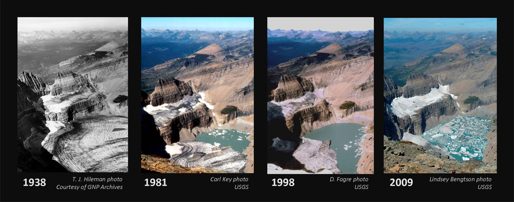
Many introductions of aquatic species, both marine and freshwater, have occurred when ships have dumped ballast water taken on at a port of origin into waters at a destination port. Water from the port of origin is pumped into tanks on a ship empty of cargo to increase stability. The water is drawn from the ocean or estuary of the port and typically contains living organisms such as plant parts, microorganisms, eggs, larvae, or aquatic animals. The water is then pumped out before the ship takes on cargo at the destination port, which may be on a different continent. The zebra mussel was introduced to the Great Lakes from Europe prior to 1988 in ship ballast. The zebra mussels in the Great Lakes have cost the industry millions of dollars in clean up costs to maintain water intakes and other facilities. The mussels have also altered the ecology of the lakes dramatically. They threaten native mollusk populations, but have also benefited some species, such as smallmouth bass. The mussels are filter feeders and have dramatically improved water clarity, which in turn has allowed aquatic plants to grow along shorelines, providing shelter for young fish where it did not exist before. The European green crab, Carcinus maenas, was introduced to San Francisco Bay in the late 1990s, likely in ship ballast water, and has spread north along the coast to Washington. The crabs have been found to dramatically reduce the abundance of native clams and crabs with resulting increases in the prey of native crabs.
Invading exotic species can also be disease organisms. It now appears that the global decline in amphibian species recognized in the 1990s is, in some part, caused by the fungus Batrachochytrium dendrobatidis, which causes the disease chytridiomycosis (Figure 21.10). There is evidence that the fungus is native to Africa and may have been spread throughout the world by transport of a commonly used laboratory and pet species: the African clawed frog, Xenopus laevis. It may well be that biologists themselves are responsible for spreading this disease worldwide. The North American bullfrog, Rana catesbeiana, which has also been widely introduced as a food animal but which easily escapes captivity, survives most infections of B. dendrobatidis and can act as a reservoir for the disease.
Early evidence suggests that another fungal pathogen, Geomyces destructans, introduced from Europe is responsible for white-nose syndrome, which infects cave-hibernating bats in eastern North America and has spread from a point of origin in western New York State (Figure 21.11). The disease has decimated bat populations and threatens extinction of species already listed as endangered: the Indiana bat, Myotis sodalis, and potentially the Virginia big-eared bat, Corynorhinus townsendii virginianus. How the fungus was introduced is unknown, but one logical presumption would be that recreational cavers unintentionally brought the fungus on clothes or equipment from Europe.
Climate change, and specifically the anthropogenic warming trend presently underway, is recognized as a major extinction threat, particularly when combined with other threats such as habitat loss. Anthropogenic warming of the planet has been observed and is hypothesized to continue due to past and continuing emission of greenhouse gases, primarily carbon dioxide and methane, into the atmosphere caused by the burning of fossil fuels and deforestation. These gases decrease the degree to which Earth is able to radiate heat energy created by the sunlight that enters the atmosphere. The changes in climate and energy balance caused by increasing greenhouse gases are complex and our understanding of them depends on predictions generated from detailed computer models. Scientists generally agree the present warming trend is caused by humans and some of the likely effects include dramatic and dangerous climate changes in the coming decades. However, there is still debate and a lack of understanding about specific outcomes. Scientists disagree about the likely magnitude of the effects on extinction rates, with estimates ranging from 15 to 40 percent of species committed to extinction by 2050. Scientists do agree that climate change will alter regional climates, including rainfall and snowfall patterns, making habitats less hospitable to the species living in them. The warming trend will shift colder climates toward the north and south poles, forcing species to move with their adapted climate norms, but also to face habitat gaps along the way. The shifting ranges will impose new competitive regimes on species as they find themselves in contact with other species not present in their historic range. One such unexpected species contact is between polar bears and grizzly bears. Previously, these two species had separate ranges. Now, their ranges are overlapping and there are documented cases of these two species mating and producing viable offspring. Changing climates also throw off the delicate timing adaptations that species have to seasonal food resources and breeding times. Scientists have already documented many contemporary mismatches to shifts in resource availability and timing.
Range shifts are already being observed: for example, on average, European bird species ranges have moved 91 km (56.5 mi) northward. The same study suggested that the optimal shift based on warming trends was double that distance, suggesting that the populations are not moving quickly enough. Range shifts have also been observed in plants, butterflies, other insects, freshwater fishes, reptiles, amphibians, and mammals.
Climate gradients will also move up mountains, eventually crowding species higher in altitude and eliminating the habitat for those species adapted to the highest elevations. Some climates will completely disappear. The rate of warming appears to be accelerated in the arctic, which is recognized as a serious threat to polar bear populations that require sea ice to hunt seals during the winter months: seals are the only source of protein available to polar bears. A trend to decreasing sea ice coverage has occurred since observations began in the mid-twentieth century. The rate of decline observed in recent years is far greater than previously predicted by climate models (Figure 21.12).
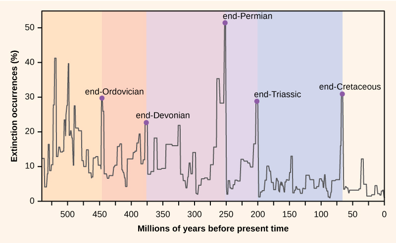
Finally, global warming will raise ocean levels due to meltwater from glaciers and the greater volume occupied by warmer water. Shorelines will be inundated, reducing island size, which will have an effect on some species, and a number of islands will disappear entirely. Additionally, the gradual melting and subsequent refreezing of the poles, glaciers, and higher elevation mountains—a cycle that has provided freshwater to environments for centuries—will be altered. This could result in an overabundance of salt water and a shortage of fresh water.
Describe the three greatest proximate threats to biodiversity (habitat loss, overharvesting, and introduction of exotic species) and explain how each reduces biodiversity. Then explain how anthropogenic climate change threatens biodiversity, including the concepts of range shifts and the effects on polar bear populations. Finally, describe one example of an invasive species and its impact on native species.
- Describe biodiversity as the equilibrium of naturally fluctuating rates of extinction and speciation
- Explain the legislative framework for conservation
- Identify the factors important in conservation preserve design
- Identify examples of the effects of habitat restoration
- Identify the role of zoos in biodiversity conservation
Preserving biodiversity is an extraordinary challenge that must be met by greater understanding of biodiversity itself, changes in human behavior and beliefs, and various preservation strategies.
The number of species on the planet, or in any geographical area, is the result of an equilibrium of two evolutionary processes that are ongoing: speciation and extinction. Both are natural "birth" and "death" processes of macroevolution. When speciation rates begin to outstrip extinction rates, the number of species will increase; likewise, the reverse is true when extinction rates begin to overtake speciation rates. Throughout the history of life on Earth, as reflected in the fossil record, these two processes have fluctuated to a greater or lesser extent, sometimes leading to dramatic changes in the number of species on the planet as reflected in the fossil record (Figure 21.13).
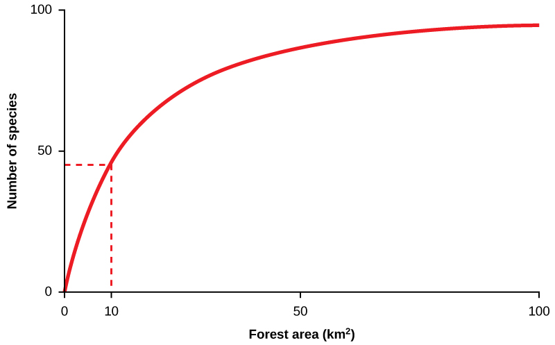
Paleontologists have identified five strata in the fossil record that appear to show sudden and dramatic (greater than half of all extant species disappearing from the fossil record) losses in biodiversity. These are called mass extinctions. There are many lesser, yet still dramatic, extinction events, but the five mass extinctions have attracted the most research into their causes. An argument can be made that the five mass extinctions are only the five most extreme events in a continuous series of large extinction events throughout the fossil record (since 542 million years ago). In most cases, the hypothesized causes are still controversial; in one, the most recent, the cause seems clear. The most recent extinction in geological time, about 65 million years ago, saw the disappearance of the dinosaurs and many other species. Most scientists now agree the cause of this extinction was the impact of a large asteroid in the present-day Yucatan Peninsula and the subsequent energy release and global climate changes caused by dust ejected into the atmosphere.
A sixth, or Holocene, mass extinction has mostly to do with the activities of Homo sapiens. There are numerous recent extinctions of individual species that are recorded in human writings. Most of these are coincident with the expansion of the European colonies since the 1500s.
One of the earlier and popularly known examples is the dodo bird. The dodo bird lived in the forests of Mauritius, an island in the Indian Ocean. The dodo bird became extinct around 1662. It was hunted for its meat by sailors and was easy prey because the dodo, which did not evolve with humans, would approach people without fear. Introduced pigs, rats, and dogs brought to the island by European ships also killed dodo young and eggs (Figure 21.14).
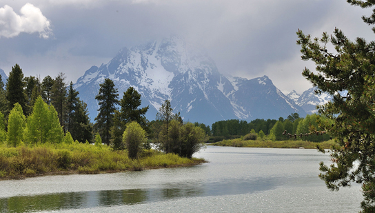
Steller's sea cow became extinct in 1768; it was related to the manatee and probably once lived along the northwest coast of North America. Steller's sea cow was discovered by Europeans in 1741, and it was hunted for meat and oil. A total of 27 years elapsed between the sea cow's first contact with Europeans and extinction of the species. The last Steller's sea cow was killed in 1768. In another example, the last living passenger pigeon died in a zoo in Cincinnati, Ohio, in 1914. This species had once migrated in the millions but declined in numbers because of overhunting and loss of habitat through the clearing of forests for farmland.
These are only a few of the recorded extinctions in the past 500 years. The International Union for Conservation of Nature (IUCN) keeps a list of extinct and endangered species called the Red List. The list is not complete, but it describes 380 vertebrates that became extinct after 1500 AD, 86 of which were driven extinct by overhunting or overfishing.
Estimates of extinction rates are hampered by the fact that most extinctions are probably happening without being observed. The extinction of a bird or mammal is often noticed by humans, especially if it has been hunted or used in some other way. But there are many organisms that are less noticeable to humans (not necessarily of less value) and many that are undescribed.
The background extinction rate is estimated to be about 1 per million species years (E/MSY). One "species year" is one species in existence for one year. One million species years could be one species persisting for one million years, or a million species persisting for one year. If it is the latter, then one extinction per million species years would be one of those million species becoming extinct in that year. For example, if there are 10 million species in existence, then we would expect 10 of those species to become extinct in a year. This is the background rate.
One contemporary extinction-rate estimate uses the extinctions in the written record since the year 1500. For birds alone, this method yields an estimate of 26 E/MSY, almost thirty times the background rate. However, this value may be underestimated for three reasons. First, many existing species would not have been described until much later in the time period and so their loss would have gone unnoticed. Second, we know the number is higher than the written record suggests because now extinct species are being described from skeletal remains that were never mentioned in written history. And third, some species are probably already extinct even though conservationists are reluctant to name them as such. Taking these factors into account raises the estimated extinction rate to nearer 100 E/MSY. The predicted rate by the end of the century is 1500 E/MSY.
A second approach to estimating present-time extinction rates is to correlate species loss with habitat loss, and it is based on measuring forest-area loss and understanding species–area relationships. The species-area relationship is the rate at which new species are seen when the area surveyed is increased (Figure 21.15). Likewise, if the habitat area is reduced, the number of species seen will also decline. This kind of relationship is also seen in the relationship between an island's area and the number of species present on the island: as one increases, so does the other, though not in a straight line. Estimates of extinction rates based on habitat loss and species–area relationships have suggested that with about 90 percent of habitat loss an expected 50 percent of species would become extinct. Figure 21.15 shows that reducing forest area from 100 km2 to 10 km2, a decline of 90 percent, reduces the number of species by about 50 percent. Species–area estimates have led to estimates of present-day species extinction rates of about 1000 E/MSY and higher. In general, actual observations do not show this amount of loss and one explanation put forward is that there is a delay in extinction. According to this explanation, it takes some time for species to fully suffer the effects of habitat loss and they linger on for some time after their habitat is destroyed, but eventually they will become extinct. Recent work has also called into question the applicability of the species-area relationship when estimating the loss of species. This work argues that the species–area relationship leads to an overestimate of extinction rates. Using an alternate method would bring estimates down to around 500 E/MSY in the coming century. Note that this value is still 500 times the background rate.
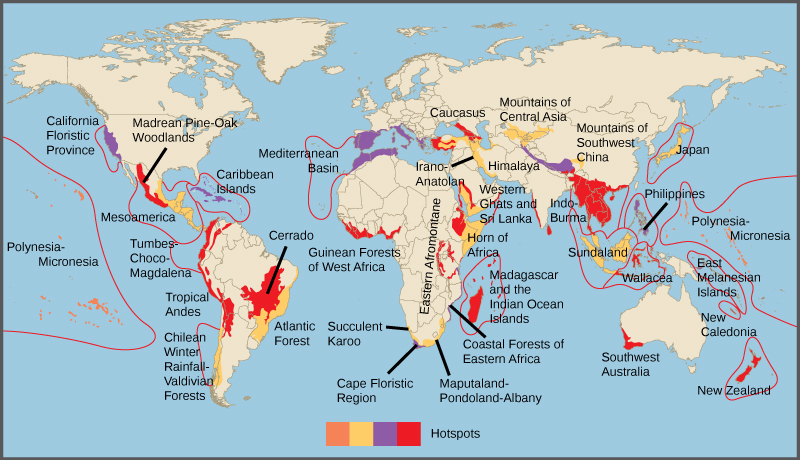
The threats to biodiversity at the genetic, species, and ecosystem levels have been recognized for some time. In the United States, the first national park with land set aside to remain in a wilderness state was Yellowstone Park in 1890. However, attempts to preserve nature for various reasons have occurred for centuries. Today, the main efforts to preserve biodiversity involve legislative approaches to regulate human and corporate behavior, setting aside protected areas, and habitat restoration.
Legislation has been enacted to protect species throughout the world. The legislation includes international treaties as well as national and state laws. The Convention on International Trade in Endangered Species of Wild Fauna and Flora (CITES) treaty came into force in 1975. The treaty, and the national legislation that supports it, provides a legal framework for preventing "listed" species from being transported across nations' borders, thus protecting them from being caught or killed in the first place when the purpose involves international trade. The listed species that are protected to one degree or another by the treaty number some 33,000. The treaty is limited in its reach because it only deals with international movement of organisms or their parts. It is also limited by various countries' ability or willingness to enforce the treaty and supporting legislation. The illegal trade in organisms and their parts is probably a market in the hundreds of millions of dollars.
Within many countries there are laws that protect endangered species and that regulate hunting and fishing. In the United States, the Endangered Species Act was enacted in 1973. When an at-risk species is listed by the Act, the U.S. Fish & Wildlife Service is required by law to develop a management plan to protect the species and bring it back to sustainable numbers. The Act, and others like it in other countries, is a useful tool, but it suffers because it is often difficult to get a species listed, or to get an effective management plan in place once a species is listed. Additionally, species may be controversially taken off the list without necessarily having had a change in their situation. More fundamentally, the approach to protecting individual species rather than entire ecosystems (although the management plans commonly involve protection of the individual species' habitat) is both inefficient and focuses efforts on a few highly visible and often charismatic species, perhaps at the expense of other species that go unprotected.
The Migratory Bird Treaty Act (MBTA) is an agreement between the United States and Canada that was signed into law in 1918 in response to declines in North American bird species caused by hunting. The Act now lists over 800 protected species. It makes it illegal to disturb or kill the protected species or distribute their parts (much of the hunting of birds in the past was for their feathers). Examples of protected species include northern cardinals, the red-tailed hawk, and the American black vulture.
Global warming is expected to be a major driver of biodiversity loss. Many governments are concerned about the effects of anthropogenic global warming, primarily on their economies and food resources. Since greenhouse gas emissions do not respect national boundaries, the effort to curb them is an international one. The international response to global warming has been mixed. The Kyoto Protocol, an international agreement that came out of the United Nations Framework Convention on Climate Change that committed countries to reducing greenhouse gas emissions by 2012, was ratified by some countries, but spurned by others. Two countries that were especially important in terms of their potential impact that did not ratify the Kyoto protocol were the United States and China. Some goals for reduction in greenhouse gasses were met and exceeded by individual countries, but, worldwide, the effort to limit greenhouse gas production is not succeeding. The intended replacement for the Kyoto Protocol has not materialized because governments cannot agree on timelines and benchmarks. Meanwhile, the resulting costs to human societies and biodiversity predicted by a majority of climate scientists will be high.
As already mentioned, the non-profit, non-governmental sector plays a large role in conservation effort both in North America and around the world. The approaches range from species-specific organizations to the broadly focused IUCN and Trade Records Analysis of Flora and Fauna in Commerce (TRAFFIC). The Nature Conservancy takes a novel approach. It purchases land and protects it in an attempt to set up preserves for ecosystems. Ultimately, human behavior will change when human values change. At present, the growing urbanization of the human population is a force that mitigates against valuing biodiversity, because many people no longer come in contact with natural environments and the species that inhabit them.
Establishment of wildlife and ecosystem preserves is one of the key tools in conservation efforts (Figure 21.16). A preserve is an area of land set aside with varying degrees of protection for the organisms that exist within the boundaries of the preserve. Preserves can be effective for protecting both species and ecosystems, but they have some serious drawbacks.
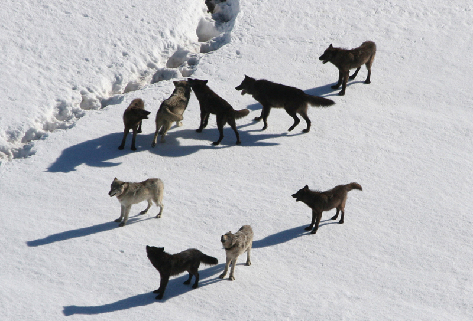
A simple measure of success in setting aside preserves for biodiversity protection is to set a target percentage of land or marine habitat to protect. However, a more detailed preserve design and choice of location is usually necessary because of the way protected lands are allocated and how biodiversity is distributed: protected lands tend to contain less economically valuable resources rather than being set aside specifically for the species or ecosystems at risk. In 2003, the IUCN World Parks Congress estimated that 11.5 percent of Earth's land surface was covered by preserves of various kinds. This area is greater than previous goals; however, it only represents 9 out of 14 recognized major biomes and research has shown that 12 percent of all species live outside preserves; these percentages are much higher when threatened species are considered and when only high quality preserves are considered. For example, high quality preserves include only about 50 percent of threatened amphibian species. The conclusion must be that either the percentage of area protected must be increased, the percentage of high quality preserves must be increased, or preserves must be targeted with greater attention to biodiversity protection. Researchers argue that more attention to the latter solution is required.
A biodiversity hotspot is a conservation concept developed by Norman Myers in 1988. Hotspots are geographical areas that contain high numbers of endemic species. The purpose of the concept was to identify important locations on the planet for conservation efforts, a kind of conservation triage. By protecting hotspots, governments are able to protect a larger number of species. The original criteria for a hotspot included the presence of 1500 or more species of endemic plants and 70 percent of the area disturbed by human activity. There are now 34 biodiversity hotspots (Figure 21.17) that contain large numbers of endemic species, which include half of Earth's endemic plants.
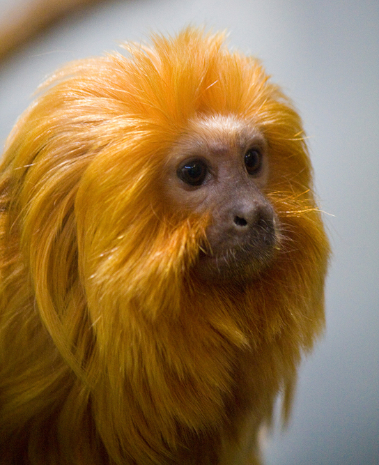
There has been extensive research into optimal preserve designs for maintaining biodiversity. The fundamental principles behind much of the research have come from the seminal theoretical work of Robert H. MacArthur and Edward O. Wilson published in 1967 on island biogeography. This work sought to understand the factors affecting biodiversity on islands. Conservation preserves can be seen as "islands" of habitat within "an ocean" of non-habitat. In general, large preserves are better because they support more species, including species with large home ranges; they have more core area of optimal habitat for individual species; they have more niches to support more species; and they attract more species because they can be found and reached more easily.
Preserves perform better when there are partially protected buffer zones around them of suboptimal habitat. The buffer allows organisms to exit the boundaries of the preserve without immediate negative consequences from hunting or lack of resources. One large preserve is better than the same area of several smaller preserves because there is more core habitat unaffected by less hospitable ecosystems outside the preserve boundary. For this same reason, preserves in the shape of a square or circle will be better than a preserve with many thin "arms." If preserves must be smaller, then providing wildlife corridors between them so that species and their genes can move between the preserves; for example, preserves along rivers and streams will make the smaller preserves behave more like a large one. All of these factors are taken into consideration when planning the nature of a preserve before the land is set aside.
In addition to the physical specifications of a preserve, there are a variety of regulations related to the use of a preserve. These can include anything from timber extraction, mineral extraction, regulated hunting, human habitation, and nondestructive human recreation. Many of the decisions to include these other uses are made based on political pressures rather than conservation considerations. On the other hand, in some cases, wildlife protection policies have been so strict that subsistence-living indigenous populations have been forced from ancestral lands that fell within a preserve. In other cases, even if a preserve is designed to protect wildlife, if the protections are not or cannot be enforced, the preserve status will have little meaning in the face of illegal poaching and timber extraction. This is a widespread problem with preserves in the tropics.
Some of the limitations on preserves as conservation tools are evident from the discussion of preserve design. Political and economic pressures typically make preserves smaller, never larger, so setting aside areas that are large enough is difficult. Enforcement of protections is also a significant issue in countries without the resources or political will to prevent poaching and illegal resource extraction.
Climate change will create inevitable problems with the location of preserves as the species within them migrate to higher latitudes as the habitat of the preserve becomes less favorable. Planning for the effects of global warming on future preserves, or adding new preserves to accommodate the changes expected from global warming is in progress, but will only be as effective as the accuracy of the predictions of the effects of global warming on future habitats.
Finally, an argument can be made that conservation preserves reinforce the cultural perception that humans are separate from nature, can exist outside of it, and can only operate in ways that do damage to biodiversity. Creating preserves reduces the pressure on human activities outside the preserves to be sustainable and non-damaging to biodiversity. Ultimately, the political, economic, and human demographic pressures will degrade and reduce the size of conservation preserves if the activities outside them are not altered to be less damaging to biodiversity.
Habitat restoration holds considerable promise as a mechanism for maintaining or restoring biodiversity. Of course once a species has become extinct, its restoration is impossible. However, restoration can improve the biodiversity of degraded ecosystems. Reintroducing wolves, a top predator, to Yellowstone National Park in 1995 led to dramatic changes in the ecosystem that increased biodiversity. The wolves (Figure 21.18) function to suppress elk and coyote populations and provide more abundant resources to the guild of carrion eaters. Reducing elk populations has allowed revegetation of riparian (the areas along the banks of a stream or river) areas, which has increased the diversity of species in that habitat. Suppression of coyotes has increased the species previously suppressed by this predator. The number of species of carrion eaters has increased because of the predatory activities of the wolves. In this habitat, the wolf is a keystone species, meaning a species that is instrumental in maintaining diversity within an ecosystem. Removing a keystone species from an ecological community causes a collapse in diversity. The results from the Yellowstone experiment suggest that restoring a keystone species effectively can have the effect of restoring biodiversity in the community. Ecologists have argued for the identification of keystone species where possible and for focusing protection efforts on these species. It makes sense to return the keystone species to the ecosystems where they have been removed.
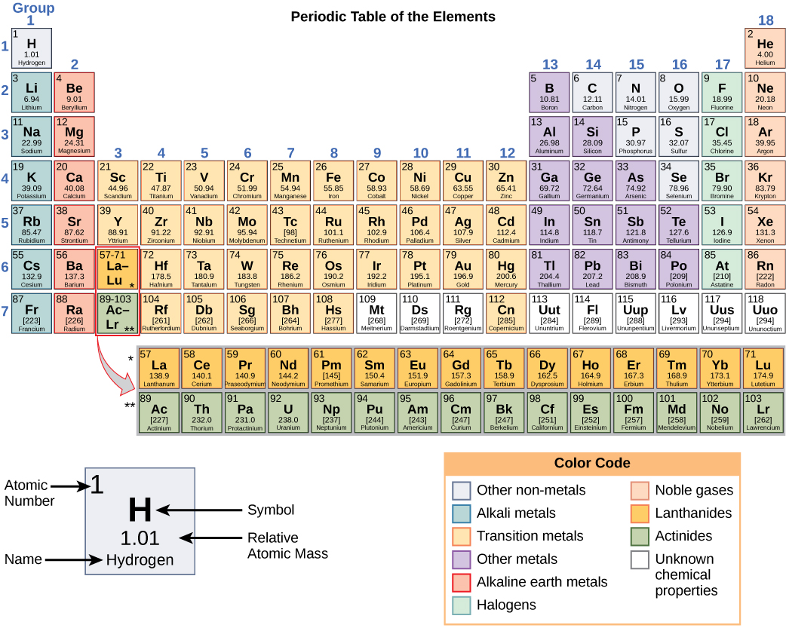
Other large-scale restoration experiments underway involve dam removal. In the United States, since the mid-1980s, many aging dams are being considered for removal rather than replacement because of shifting beliefs about the ecological value of free-flowing rivers. The measured benefits of dam removal include restoration of naturally fluctuating water levels (often the purpose of dams is to reduce variation in river flows), which leads to increased fish diversity and improved water quality. In the Pacific Northwest, dam removal projects are expected to increase populations of salmon, which is considered a keystone species because it transports nutrients to inland ecosystems during its annual spawning migrations. In other regions, such as the Atlantic coast, dam removal has allowed the return of other spawning anadromous fish species (species that are born in fresh water, live most of their lives in salt water, and return to fresh water to spawn). Some of the largest dam removal projects have yet to occur or have happened too recently for the consequences to be measured. The large-scale ecological experiments that these removal projects constitute will provide valuable data for other dam projects slated either for removal or construction.
Zoos have sought to play a role in conservation efforts both through captive breeding programs and education (Figure 21.19). The transformation of the missions of zoos from collection and exhibition facilities to organizations that are dedicated to conservation is ongoing. In general, it has been recognized that, except in some specific targeted cases, captive breeding programs for endangered species are inefficient and often prone to failure when the species are reintroduced to the wild. Zoo facilities are far too limited to contemplate captive breeding programs for the numbers of species that are now at risk. Education, on the other hand, is a potential positive impact of zoos on conservation efforts, particularly given the global trend to urbanization and the consequent reduction in contacts between people and wildlife. A number of studies have been performed to look at the effectiveness of zoos on people's attitudes and actions regarding conservation; at present, the results tend to be mixed.
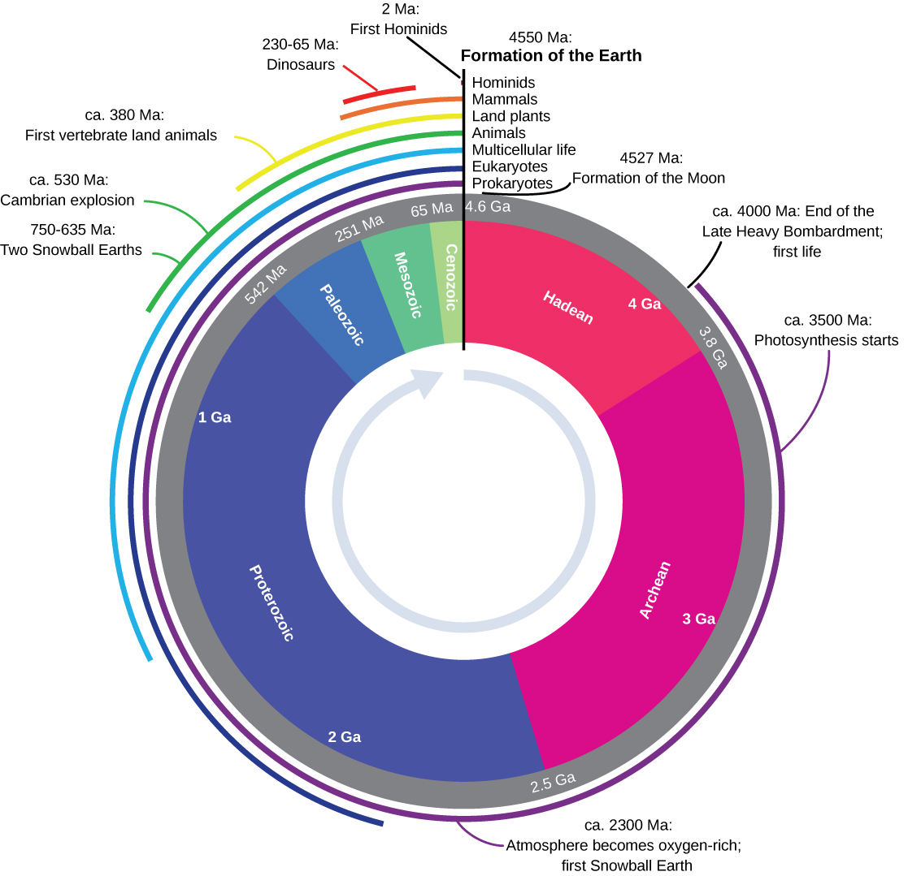
Explain the concept of mass extinctions and describe how current extinction rates compare to the background rate. Then describe the legislative framework for conservation, including CITES and the Endangered Species Act. Finally, explain the concept of biodiversity hotspots and describe how the reintroduction of wolves to Yellowstone demonstrates the importance of keystone species in habitat restoration.
- Importance of Biodiversity (types of biodiversity, chemical diversity, ecosystem services, crop diversity, seed banks) — CB 21.1
- Threats to Biodiversity (habitat loss, invasive species, overexploitation, climate change, extinction rates) — CB 21.2
- Preserving Biodiversity (biodiversity hotspots, protected areas, ESA, CITES, captive breeding, keystone species, sustainable development) — CB 21.3